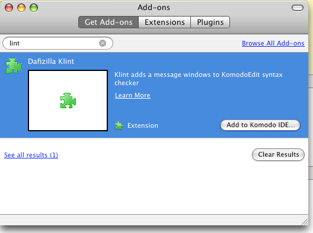
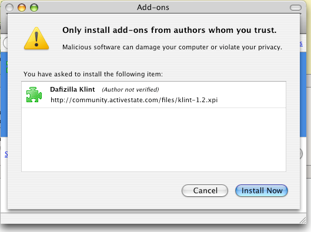
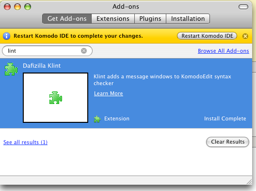

Click Tools|Add-ons to open the Add-ons
management dialog. Click the Get Add-ons button.
Browse recommended Add-ons or use the filter field search for a
particular extension. Choose an extension and click Add to
Komodo...

Confirm selection and click Install Now.

Once the Add-on is installed, click Restart
Komodo... to complete the installation.